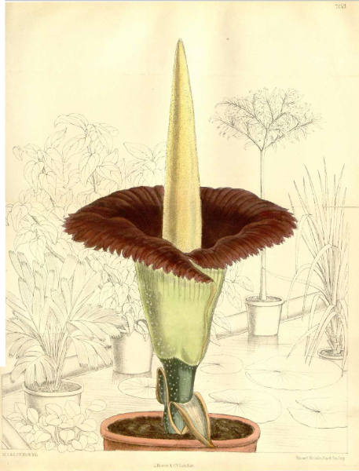
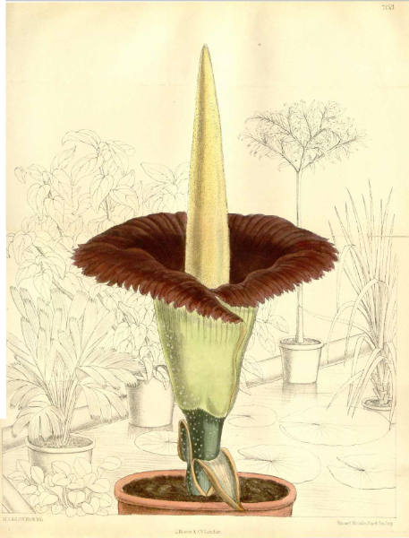

Landscape & plants
John Dunstall (1644–1675)

Walter Hood Fitch (1817 – 1892)
Matilda Smith (1854-1926)
For more:Urban design/ Furniture
El Noticek

John Dunstall (1644–1675)
Walter Hood Fitch (1817 – 1892)
Matilda Smith (1854-1926)
For more:El Noticek